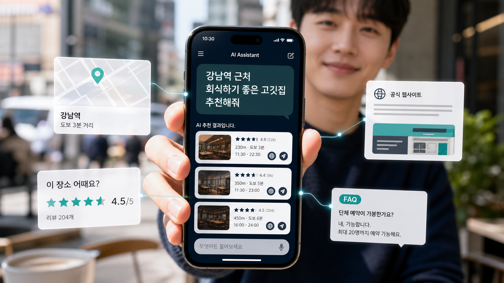

강남역 고깃집 검색
- 강남역 고깃집
- 성수동 파스타
- 동묘앞역 치과
검색 → 광고·지도·블로그 확인 → 비교 → 클릭
고객이 AI에게 물어볼 때,
우리 브랜드가 답변에 등장할 준비가 되어 있나요?
고객은 ChatGPT, Gemini, Perplexity 같은 AI에게 직접 질문합니다. AEO·GEO는 AI가 브랜드를 이해하고 설명할 수 있도록 홈페이지, 서비스 정보, FAQ, 지역 정보, 신뢰 자료와 구조화 데이터를 정리하는 작업입니다.
특정 AI의 추천·인용·순위를 보장하는 서비스가 아닙니다.

예전에는 검색 결과를 하나씩 눌러 비교했다면, 이제는 상황과 목적을 AI에게 질문하고 정리된 답변에서 후보를 좁힙니다.
검색 → 광고·지도·블로그 확인 → 비교 → 클릭
질문 → AI 답변 → 후보 비교 → 홈페이지·지도 확인 → 문의
고객이 자주 묻는 질문에 브랜드가 명확하게 답하도록 FAQ, 서비스 설명, 가격 범위, 진행 과정, 지역 정보와 전문성을 정리합니다.
생성형 AI가 브랜드를 이해하고 답변에 활용할 수 있도록 공식 홈페이지, 구조화 데이터, 사례, 신뢰 자료와 서비스 설명을 정리합니다.
흩어진 홍보 문구보다 출처와 맥락이 정리된 공식 정보가 필요합니다.
회사·서비스·위치·사례·FAQ의 기준점
페이지 의미를 전달하는 데이터
고객 질문에 직접 답하는 문장
해결한 문제를 보여주는 신뢰 자료
위치·대상 고객의 지역 맥락
지도·리뷰·언론·SNS·프로필
브랜드명, 업종과 지역 키워드로 질문했을 때 현재 브랜드가 어떻게 설명되는지 점검합니다.
지역·업종·문제·비교·추천 형태로 고객이 실제 물어볼 질문 리스트를 설계합니다.
“강남역 회식하기 좋은 고깃집은?”회사, 서비스, 업종, 지역, 사례, FAQ, 가격 범위와 진행 방식을 체계적으로 정리합니다.
고객 질문에 직접 답하는 FAQ와 답변형 문장 구조를 만듭니다.
Organization, LocalBusiness, Service, FAQPage와 BreadcrumbList 등을 페이지 성격에 맞게 적용합니다.
무엇을 했고 어떤 문제를 해결했는지 사례 중심으로 공식 홈페이지에 축적합니다.
상호, 주소, 전화번호, 서비스 설명과 링크가 서로 일관되게 보이도록 정리합니다.
질문형 키워드, AI 답변 현황, 홈페이지 구조와 구조화 데이터 점검 결과로 개선 방향을 제안합니다.
고객이 AI에게 질문하는 순간, AI가 참고할 수 있는 공식 정보가 없다면 우리 브랜드는 답변 후보에서 멀어질 수 있습니다.
필요 정보 메뉴, 분위기, 위치, 리뷰, 예약, 가격대, 주차, 영업시간
우리 업종 AI 질문 진단받기 →필요 정보 진료 과목, 의료진, 진료시간, 위치, 상담 동선, 신뢰 정보
치료 효과를 보장하는 표현은 사용하지 않습니다.우리 업종 AI 질문 진단받기 →필요 정보 시술 종류, 가격대, 포트폴리오, 예약, 후기, 위치
우리 업종 AI 질문 진단받기 →필요 정보 대상, 커리큘럼, 강사, 수업 방식, 후기, 상담 과정
우리 업종 AI 질문 진단받기 →필요 정보 지점별 주소, 영업시간, 전화번호, 지도 링크, 브랜드 소개, 리뷰
우리 업종 AI 질문 진단받기 →실제 성과나 AI 인용 결과를 주장하는 사례가 아니라, 업종별로 적용할 수 있는 정보 구조 시나리오입니다.
플레이스는 있지만 메뉴, 분위기, 예약, 단체 이용과 주차 정보가 공식 홈페이지에 부족합니다.
개선 작업AI가 매장의 이용 목적과 방문 정보를 이해할 수 있는 기반이 생깁니다.
AI 검색 대응 상담 →진료 정보가 블로그와 광고에 흩어져 공식 홈페이지에서 진료 과목, 의료진과 상담 과정이 명확하지 않습니다.
개선 작업과장 없이 정확한 진료 정보와 신뢰 요소를 전달하는 기반이 생깁니다.
AI 검색 대응 상담 →지점마다 네이버, 구글과 홈페이지 정보가 달라 AI가 브랜드와 지점을 일관되게 이해하기 어렵습니다.
개선 작업브랜드와 각 지점 정보를 연결해 이해할 수 있는 공식 기준점이 생깁니다.
AI 검색 대응 상담 →SEO는 검색 결과에서 페이지가 발견되도록 돕는 작업에 가깝고, AEO·GEO는 AI와 답변형 검색이 브랜드 정보를 이해하고 답변에 활용할 수 있도록 질문형 콘텐츠, 공식 정보, 구조화 데이터와 신뢰 자료를 정리하는 작업입니다.
특정 AI 답변에 브랜드가 반드시 등장한다고 보장할 수는 없습니다. 다만 AI가 이해할 수 있는 공식 정보와 구조화된 콘텐츠를 정리해 인용 가능성을 높이는 기반을 만들 수 있습니다.
네이버 플레이스, 블로그와 SNS도 중요하지만 AI가 브랜드를 이해할 공식 기준점으로는 홈페이지가 중요합니다. 회사 소개, 서비스, 위치, FAQ, 사례와 구조화 데이터가 정리된 홈페이지는 AI 검색 대응의 중심 자산이 됩니다.
블로그는 외부 콘텐츠로 도움이 될 수 있지만 공식 정보가 흩어져 있으면 AI가 브랜드를 일관되게 이해하기 어렵습니다. 공식 홈페이지를 기준으로 정보를 정리하고 블로그, 네이버와 구글 프로필을 연결하는 것이 좋습니다.
식당, 병원, 치과, 학원, 미용실, 컨설팅, 프랜차이즈와 다점포 브랜드처럼 고객이 비교하고 질문한 뒤 선택하는 업종에 특히 필요합니다.
구조화 데이터는 검색엔진이 페이지의 의미를 이해하는 데 도움을 주는 형식입니다. Organization, LocalBusiness, Service, FAQPage와 BreadcrumbList 등을 활용하면 홈페이지 정보를 더 명확히 전달할 수 있습니다.
가능합니다. 기존 홈페이지의 서비스 설명, FAQ, 사례, 메타 정보, 구조화 데이터, 사이트맵과 네이버·구글 연결 상태를 점검하고 개선 방향을 제안할 수 있습니다.
홈페이지 주소, 네이버 플레이스 링크, 구글 비즈니스 프로필 링크, 주요 서비스, 지역, 고객이 자주 묻는 질문과 경쟁 업체명을 알려주시면 진단에 도움이 됩니다.
고객이 AI에게 질문했을 때 브랜드가 어떻게 이해되고 있는지, 홈페이지와 네이버·구글 정보가 AI 검색에 대응할 수 있는 구조인지 먼저 점검해 보세요.